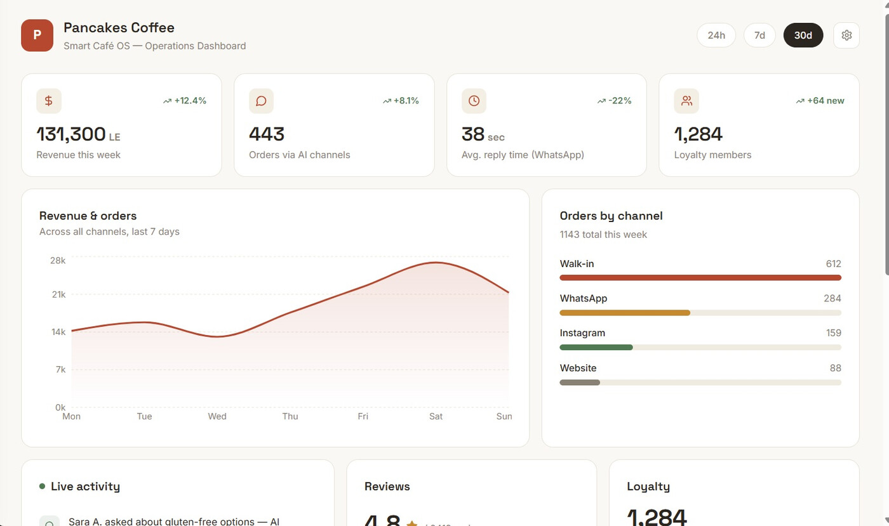
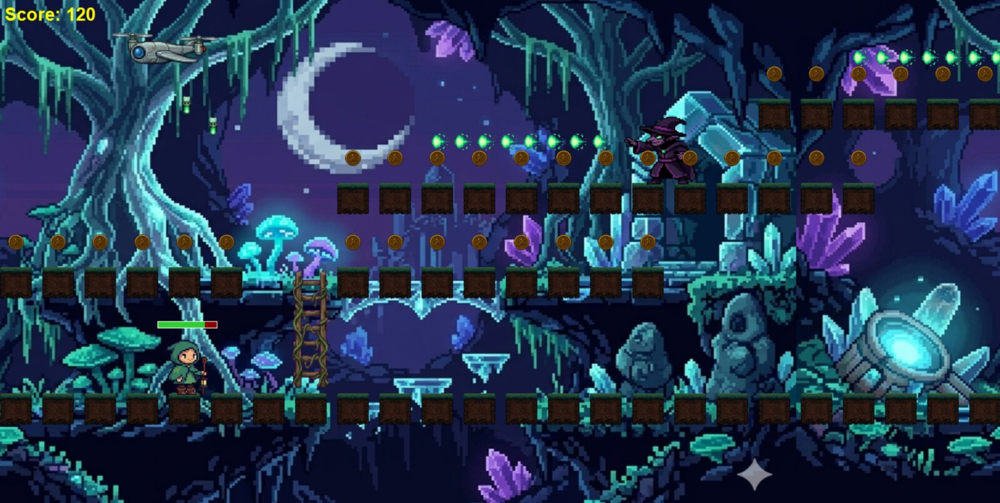
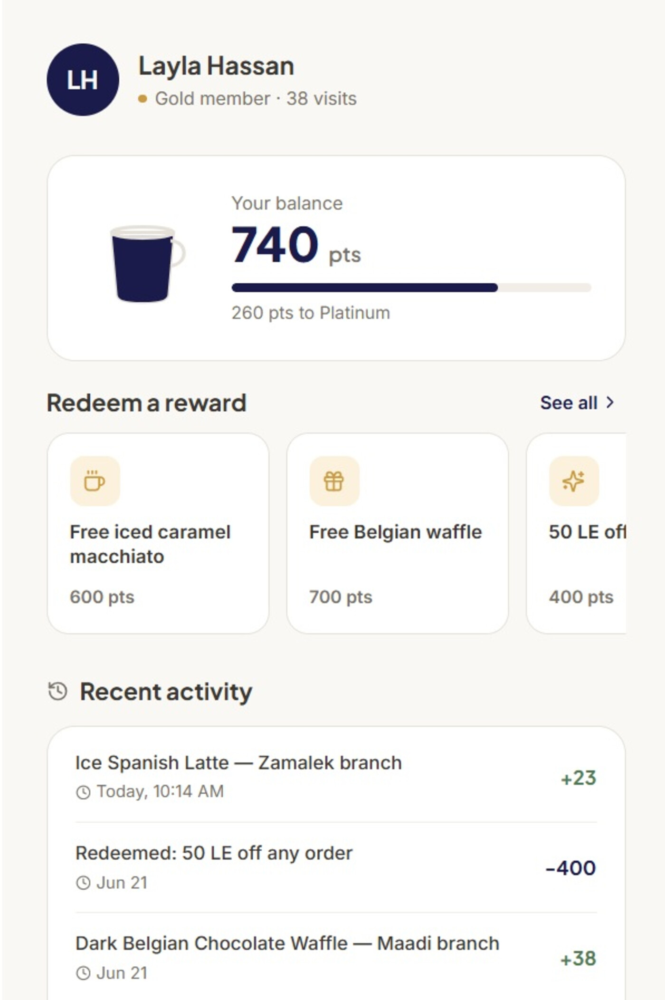

Catalyst — AI-Powered Employee Growth Platform
Enterprise concept for frontline industrial teams — AI-prioritized tasks, safety signals, visible growth, human-in-the-loop.

Pancakes Coffee — Retention System
Website, loyalty app, and ops dashboard for a 5-branch Cairo cafe, built from a real audit finding.

2D Platformer
Character & enemy animation, projectile/laser systems, jump physics, camera scroll. C# / Windows Forms.

Daily Companion — Prayer & Qur'an App
Mobile concept combining prayer times, Qur'an reading progress, and daily dhikr. Full light and dark modes, one consistent bottom-nav pattern.
University E-Learning Platform
Three-role platform (student, staff, admin) built with a university team. I owned the frontend: login system, home/welcome pages, and course pages — in real use by students.
PHP Pharmacy Management System
OOP system implementing the Observer and Strategy design patterns, built to match an existing CRUD lab's coding style exactly.
CS Foundations
Huffman Coding compression (trees, linked lists, three build phases), a text-based 2D console game in C++, and small JavaScript DOM projects (Pomodoro timer, calculator).